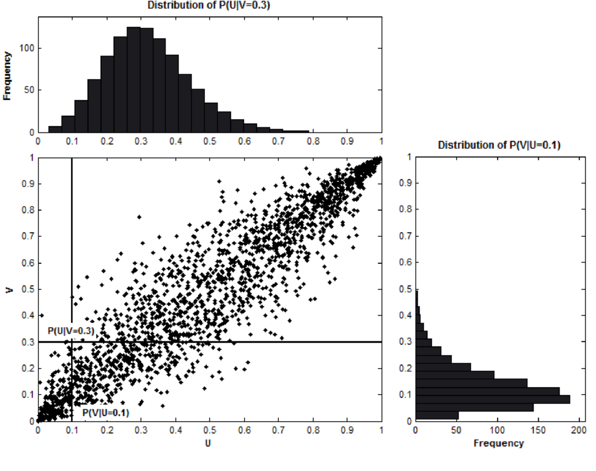
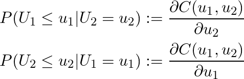
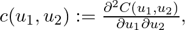
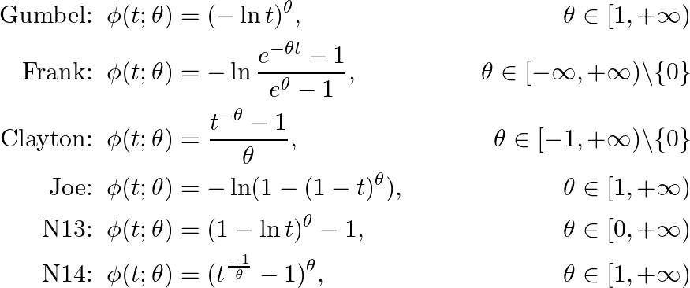
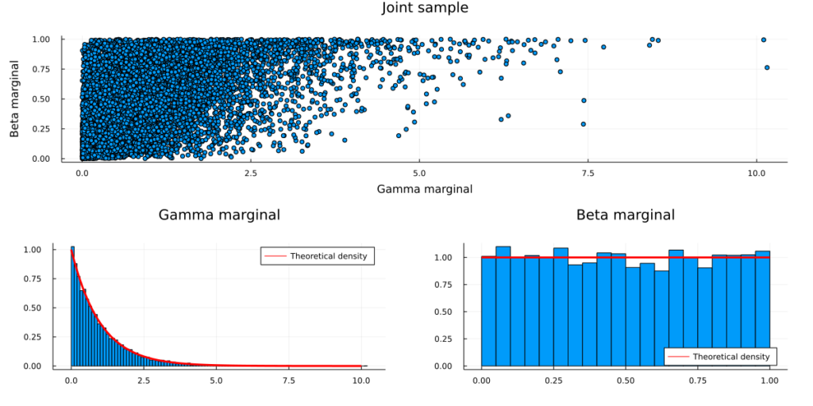
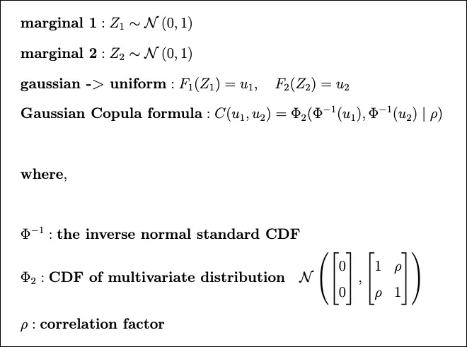

3 Copulas
3.1 Misc
- Used to create joint distributions that can be used to describe associated variables that may not be from the same distribution.
- For variables with the same distribution, a multivariate distribution could be used instead (e.g. multivariate normal,
mvtnorm::rmvnorm) - If each variable has a different behavior, we cannot assume they follow the same distribution.
- And most importantly, each variable is likely to influence the others — we cannot assume they are independent.
- e.g. product cannibalization in retail, a successful product pulls demand away from similar items in its category.
- For variables with the same distribution, a multivariate distribution could be used instead (e.g. multivariate normal,
- Notes from: https://hudsonthames.org/copula-for-pairs-trading-introduction/
- Also see
- Forecasting, Nonlinear >> Misc >> packages, copulas
- Finance >> Mean Reversion Strategy or Pairs Trading
- Packages
- {{latentcor}}: semi-parametric latent Gaussian copula models
- {LocalCop} (Intro, JOSS): Local Likelihood Inference for Conditional Copula Models
- Implements a local likelihood estimator for the dependence parameter in bivariate conditional copula models. Copula family and local likelihood bandwidth parameters are selected by leave-one-out cross-validation.
- {rvinecopulib} - High Performance Algorithms for Vine Copula Modeling
- Models vine copula and bivariate copula models
- Ability to model discrete variables
- {{vinecopulas}} (JOSS)
- Fit both bivariate and vine copulas
- Simulate from both bivariate and vine copulas
- Allow for both discrete as well as continuous input data
- Draw conditional samples for any variables of interest with the use of bivariate copulas and different vine structures
- Used in finance for non-linear and tail risk qualities but currently doesn’t take autocorrelation into account
- Conditional copulas models allow the dependence structure between multiple response variables to be modelled as a function of covariates.
- Along with random samples from the joint distribution, conditional samples can also be drawn.
- e.g. For a copula that models the relationship between height and weight, samples of weight given a specific height can be drawn.
- Vine Copulas
- Can be used construct a multivariate model with the use of bivariate copulas as building blocks
- To draw conditional samples from a vine copula for a specific variable, the vine copula has to be structured in such a way that the order in which the samples are generated draws the variable of interest last, i.e. the sample is conditioned on the preceding samples of other variables.
- e.g. For a vine copula with age, height, and weight variables, if one wants to generate a conditional sample of height, the samples of age and weight have to be provided first.
- Can use discrete and continuous variables
- Notes
- A copula is a multivariate distribution that can be formed from a variety of underlying distributions (e.g. gamma, normal, beta) with a specified correlation structure (depending on the type of copula you choose). You create one of these copulas from your data, and sample from it. These samples are used to run simulations on.
- Example:
- Take return prices from a few correlated stocks and create a copula.
- Train a model with economic predictors and your sampled copula data as the response.
- Feed values for you economic predictors that indicate an economic state (e.g. recession) to your model and forecast the response to see how that group of stocks reacts.
- Example:
- The specified correlation stucture is called the “dependence structure.”
- e.g. asymetrical correlation or tail correlation
- The Gaussian copula is typically described as \(\Phi_R (\Phi^{-1}(u_1), \ldots, \Phi^{-1}(u_d))\), but each \(u\) is NOT a variable in your data. Each \(u\) is the result of feeding a variable of your data through its ECDF. That result is always a uniform random variable with 0,1 parameters, \(\mathcal{U}(0,1)\), hence the “u.” So that copula definition is equivalent to \(\Phi_R (\Phi^{-1}(F_1(X_i), \ldots, \Phi^{-1}(F_d(X_d))\) where \(X_i\) is one of your data variables and \(F_i\) is its ECDF.
- Each ECDF of your data is a marginal distribution is often simply referred to as a “marginal.”
- {vinecopula} and {copula} have a function called
pobswhich feeds your data through an ecdf and scales it by (n+1). Didn’t know it had to be scaled, so maybe an ecdf doesn’t always output values between 0 and 1 like a cdf does.
- A copula is a multivariate distribution that can be formed from a variety of underlying distributions (e.g. gamma, normal, beta) with a specified correlation structure (depending on the type of copula you choose). You create one of these copulas from your data, and sample from it. These samples are used to run simulations on.
3.2 Inverse Transform Sampling
Notes from video
Understanding IVS will help with understanding the copula mathematics
Relationship between PDF and CDF (e.g. exponential distribution)
.png)
- Probability x ≤ 2 is
- the shaded area of the PDF
- Is the output of CDF(x) where x = 2
- Equivalence between the PDF and CDF shown in the top integral
- More general form shown in the bottom integral
- Probability x ≤ 2 is
The inverse of the CDF give you the value of x for any probability
.png)
- e.g. CDF-1(0.7) = 2 and CDF-1(0.5) = 0.7
- Whichever distribution’s CDF-1 is used, the output of that function will be from that distribution (e.g. 2, 0.7)
Mathematically:
\[ u_i \sim \mathcal{U}(0, 1)\\ x_i = \mbox{CDF}^-1(u_i) \]
- Expression says to take a sample from a Uniform distribution, plug that into the inverse CDF, and get a sample from the that CDF’s distribution
Example: Gamma Distribution
gamma1 <- rgamma(1e6, shape=1) hist(gamma1, main='gamma distribution', cex.main=1.3, cex.lab=1.3, cex.axis=1.3, prob='true') # pgamma is the cdf of gamma u <- pgamma(gamma1, shape=1) hist(u, main='Histogram of uniform samples from gamma CDF', cex.main=1.3, cex.lab=1.3, cex.axis=1.3, prob='true') # qgamma is the inverted cdf of gamma gamma_transformed <- qgamma(u, shape=1) hist(gamma_transformed, main='Histogram of transformed gamma', cex.main=1.3, cex.lab=1.3, cex.axis=1.3,prob='true')
3.3 Sklar’s Theorem
- Guarantees the existence and uniqueness of a copula for two continuous random variables
- For two random variables \(S_1\), \(S_2\) in \([-\infty, \infty]\). \(S_1\) and \(S_2\) have their own fixed, continuous CDFs, \(F_1\), \(F_2\).
Consider their (cumulative) joint distribution
\[ H(s_1, s_2) := P(S_1 \leq s_1, S_2 \leq s_2) \]
Now take the uniformly distributed quantile random variable, \(U_1(S_1)\), \(U_2(S_2)\). For every pair, \((u_1, u_2)\), drawn from the pair’s quantile, we define the *bivariate copula, \(C: [0,1] \times [0,1] \rightarrow [0,1]\) as:
\[ \begin {align} C(u_1, u_2) &= P(U_1 \leq u_1, U_2 \leq u_2) \\ &= P(S_1 \leq F_1^{-1}(u_1), S_1 = F_2^{-1}(u2)) \\ &= H(F_1^{-1}(u_1), F_2^{-1}(u_2)) \end {align} \]
- Where \(F_1^{-1}\) and \(F_2^{-1}\) are inverses (i.e. solved for S) of the marginal CDFs, \(F_1\) and \(F_2\).
- A copula is just the joint cumulative density for quantiles of a pair of random variables.
- \(H\) is “some” function. It varies with the type of copula (see types section).
- See Probability notebook, “Simulation of a random variable values of a distribution using the distribution’s cdf” section and bookmarks similarly named for some intuition behind what’s happening in Sklar’s Theorem
- If the 1st quantile is from 0 to 0.25 then randomly select some numbers in that range using U(0,1)
- This is unclear to me, he might be calling every number drawn from U(0,1) a “quantile”
- But I think because you’re using quantiles it’s non-linear which kind a makes sense (thinking about why quantile regression is used sometimes), so maybe he is talking about deciles, quartiles, etc.
- Maybe (see third line of this section) each quantile is treated as a separate dateset where numbers are drawn from U(0,1) and copula calculated.
- Find the inverse CDF of the distribution
- Plug those numbers from the 1st quantile into the inverse CDF to get the simulated values
- Repeat for other random variable
- If the 1st quantile is from 0 to 0.25 then randomly select some numbers in that range using U(0,1)
- 
- The scatter plot crosshair says of the value of the inverse CDF of variable U using input 0.1 corresponds to the value of the inverse CDF of variable V using input 0.3. The closer the points are to the y = x line the greater the association between them (like a Q-Q plot)
- Mathematically the cumulative conditional probabilities shown in the scatter plot are given by taking partial derivatives of the joint inverse CDF:
- Aside: taking the derivative of a (not inverse) marginal (not joint) CDF is the pdf
- The copula density is defined as:
- Which is a probability density. Larger the copula density, the denser the clump of points in the scatter plot
- Coefficients of Lower and Upper Tail Dependence: quantifies the strength of association during joint tail events for each random variable’s distribution
- Not discernible from plots, so needs to be calculated
- Upper tail dependencies refers to the how closely two variables increase together during an extreme “positive” event
- e.g. How strongly 2 stocks move together during an huge gain
- Lower tail dependencies are similar except the event is in extreme “negative” direction
- For stocks at least, lower tail dependencies tend to be much stronger than upper tail tendencies
- Types
- Not including the actual bivariate copula formulas because I’m not sure how the “H” (see bivariate copula def above) works in practice (and I don’t want to frustrate future me). I am including descriptions and important characteristics which should have practical applicability. See article for copula formulas.
- Archimedean
- Parametric and uniquely determined by generator functions, φ, that use a parameter, θ
- θ measures how “closely” the two random variables are “related”, and its exact range and interpretation are different across different Archimedean copulas
- Generators seem to act like the inverse CDFs in the bivariate copula formula
- Generators:

- Symmetric and scalable to multiple variables, although a closed-form solution may not be available in higher dimensions
- Parametric and uniquely determined by generator functions, φ, that use a parameter, θ
- Elliptical
- Symmetric and easily extended to multiple variables
- Assumes symmetry on both upward co-moves and downward moves (i.e. lacks flexibility)
- Gaussian - uses Gaussian inverse CDF and a correlation matrix
- Student-t - similar as Gaussian but with degrees of freedom
- Mixed
- Weighted ensemble of the copulas above
- Helps with overfitting and more finely calibrating upper and lower tail dependencies
- Weights should sum to 1
- Other Notes
- The wording below is a bit confusing
- “Don’t have” I think means doesn’t have the capability to detect or isn’t sensitive to
- “Stronger center dependence” might mean a greater ability to detect or maybe a center dependence bias
- I’m not even sure what a “center” dependency means
- Frank and Gaussian copulas don’t have tail dependencies
- Gaussian contributed to 2008 financial crisis
- Frank copula has a stronger center dependence than a Gaussian (?)
- Copulas with upper tail dependence: Gumbel, Joe, N13, N14, Student-t.
- Copulas with lower tail dependence: Clayton, N14 (weaker than upper tail), Student-t.
- Student t copula emphasizes extreme results: it is usually good for modelling phenomena where there is high correlation in the extreme values (the tails of the distribution).
- Note also that the correlation is symmetrical, so the strength of correlation is the same for both tails. This might be an issue for some applications.
- The wording below is a bit confusing
- Notes
- Definition
- Copulas are joint cumulative distribution functions (c.d.f.) for unit-uniform random variables
- Probability integral transform
- States that we can transform any continuous random variable to a uniform one by plugging it into its own c.d.f.
- Transform a uniform random variable to any continuous random variable
- So plugging a Uniform random variable into the quantile function which is the inverse of the cdf and outputs a continuous random variable
- Gaussian Copula
- Definition
- Example
- Defining a (generic) Copula (aka joint cdf) for two random variables
- Where FX(x), FY(y) are cdfs of Gamma, Beta distributions respectively
- Defining a Gaussian Copula for these 2 random variables
- Format: Copula = joint cdf(quantile(cdf(gamma_random_variable), cdf(gamma_random_variable))
- Construct a Copula
- Transform the Gamma and Beta marginals into Uniform marginals via the respective c.d.f.s
- Transform the Uniform marginals into standard Normal marginals via the quantile functions
- Define the joint distribution via the multivariate Gaussian c.d.f. with zero mean, unit variance and non-zero covariance (covariance matrix R)
- Sample from a Copula
The bi-variate random variable has the above properties. (standard Gamma/Beta marginals with Gaussian Copula dependencies)
Steps (reverse of the copula process)
- Draw a sample from a bi-variate Gaussian with mean zero, unit variance and non-zero covariance (covariance matrix R).
- You now have two correlated standard Gaussian variables.
- Transform both variables with the standard Gaussian c.d.f. (i.e. plugging each into a gaussian cdf)
- You now have two correlated Uniform variables. (via probability integral transform)
- Transform one variable with the standard Beta quantile function and the other variable with the Gamma quantile function
- Draw a sample from a bi-variate Gaussian with mean zero, unit variance and non-zero covariance (covariance matrix R).
Code (Julia)
using Measures Random.seed!(123) # Step 1: Sample bi-variate Gaussian data with zero mean and unit variance mu = zeros(2) R = [1 0.5; 0.5 1] sample = rand(MvNormal(mu,R),10000) # Step 2: Transform the data via the standard Gaussian c.d.f. sample_uniform = cdf.(Normal(), sample) # Step 3: Transform the uniform marginals via the standard Gamma/Beta quantile functions sample_transformed = sample_uniform sample_transformed[1,:] = quantile.(Gamma(),sample_transformed[1,:]) sample_transformed[2,:] = quantile.(Beta(),sample_transformed[2,:])
- Defining a (generic) Copula (aka joint cdf) for two random variables
- Visuals
 - Note: We could drop the zero-mean, unit-variance assumption on the multivariate Gaussian.
- In that case we would have to adjust the Gaussian c.d.f. to the corresponding marginals in order to keep the integral probability transform valid.
- Since we are only interested in the dependency structure (i.e. covariances), standard Gaussian marginals are sufficient and easier to deal with
- Example: Gaussian Copula derived from beta and gamma vectors (i.e. “marginals”) (article)
In this example, marginal 1 and marginal 2 are sampled from the beta and gamma distributions, respectively
# draw our data samples from 2 distributions, a beta and a gamma - beta1 = stats.distributions.beta(a=10, b=3).rvs(1000) gamma1 = stats.distributions.gamma(a=1, loc=0).rvs(1000) # - we use the emprical cdf instead of beta's or gamma's cdf # - we do this to show that copulas can be computed regardless of the # underlying distributions ecdf1 = ECDF(beta1) # F(beta1) = u1 ecdf2 = ECDF(gamma1) # F(gamma1) = u2 # small correction to remove infinities ecdf1.y[0]=0.0001 ecdf2.y[0]=0.0001 x1=stats.norm.ppf(ecdf1.y) # Φ^-1(u1) x2=stats.norm.ppf(ecdf2.y) # Φ^-1(u1) # Parameters of Φ2 mu_x = 0 variance_x = 1 mu_y = 0 variance_y = 1 cov=0.8 # I think this is just some preprocessing to get the vectors into the correct shape for the mvn function X, Y = np.meshgrid(x1,x2) pos = np.empty(X.shape + (2,)) pos[:, :, 0] = X; pos[:, :, 1] = Y #remember phi2 is just a multivariate normal CDF rv = stats.multivariate_normal([mu_x, mu_y], [[variance_x, cov], [cov, variance_y]]) phi2=rv.cdf(pos)
- Note how Empirical CDFs are used which what you’d use if you didn’t know the underlying distribution of your two vectors
- See Distributions >> Terms >> Empirical CDFs
- Steps
- Compute ECDFs of vectors with “unknown” distributions
- Apply Gaussian Copula formula
- Compute gaussian inverse CDFs for each vector
- Decide on parameter values of multivariate gaussian distribution
- Mean, Variance, and Covariance
- Create multivariate gaussian distribution
- Apply multivariate gaussian CDF to the inverse CDFs of the two vectors
{kind=link}
{kind=link}
{kind=link}
{kind=link}
{kind=link}
{kind=link}
{kind=link}
{kind=link}
{kind=link}